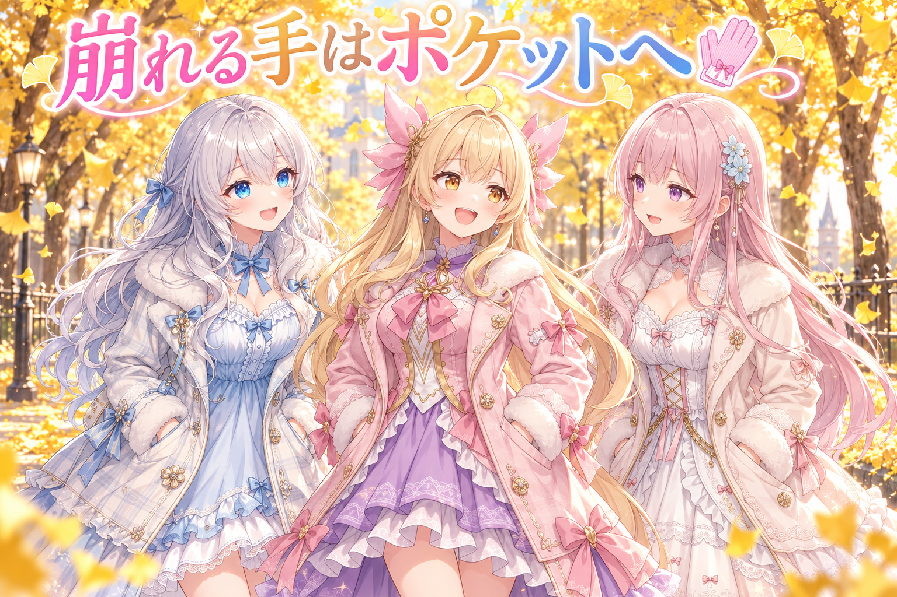
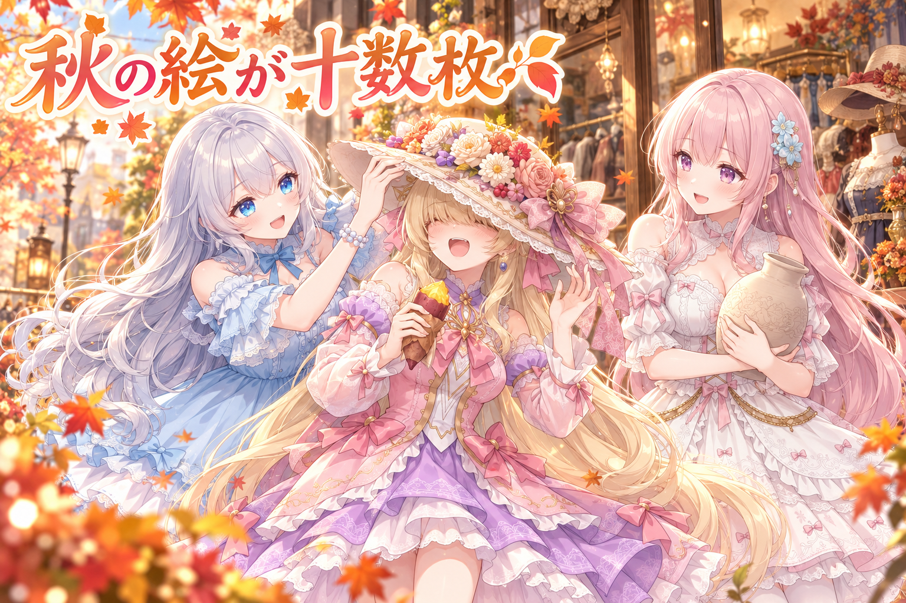
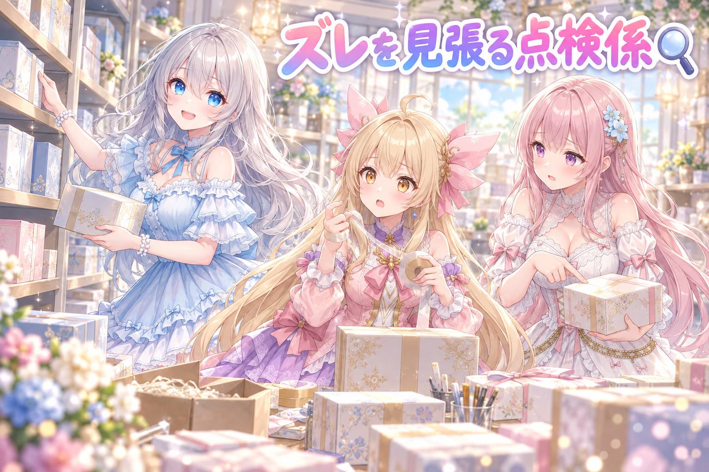
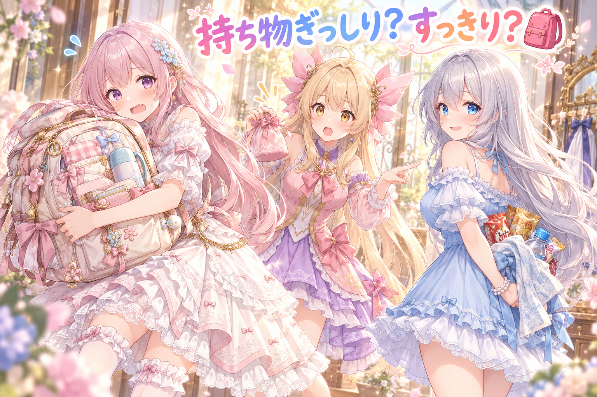

📌 3行まとめ
画像AIが苦手な「手」の崩れ対策として、配布用の作例を「ポケットに手を入れる」ポーズで作り直した（後ろ手に隠す案はそれでも崩れた）
秋のイラスト投稿やお絵描き企画への参加作品が十数枚、SNSに並んだ
確認OKと実際の投稿がズレていないかを照らし合わせる点検の仕組みを作り、夜はドラクエ10のテスト配信→メンテ後に格闘ゲーム配信へ
もくじ 手が崩れるなら、隠しちゃえ作戦🧤 秋の絵とお絵描き企画、十数枚ぶん🍂 OKと投稿のズレを見張る、点検係を作った🔍 ドラクエ10でテスト配信、メンテで格ゲーへ🎮 🎁 お楽しみコーナー：どっち派会議「持ち物ぎっしり派 vs すっきり派」 💐 今日のまとめ ルピナス （笑顔）
こんばんは、常連リスナーさん！今日もAIBSのゆるい放送室、開いてますよ〜。司会のルピナスです。
アイリス （大笑い）
前回はAIのお手伝いさんがふたり体制になった話だったよね！今日はそのふたりがせっせと働いた成果、見せびらかす回だよ！
フィオナ （ふつう）
見せびらかす、って言い方はちょっと……。でも今日は、手の崩れ対策と、秋の絵と、夜の配信と、話題がたくさんあるんです。
ルピナス （ウインク）
うん、盛りだくさん。じゃあまずは、画像AIの永遠の宿敵「手」の話からいこっか。
1. 手が崩れるなら、隠しちゃえ作戦🧤 
画像生成AIは、指の本数が増えたり、腕が変な方向に曲がったりと、とにかく「手」まわりが崩れやすいことで知られています。この日は、プロンプト配布の作例（「こんな絵が作れますよ」という見本の絵）のうち、銀杏並木の回の3人分と、号外回のフィオナの1枚を作り直しました。
作戦はシンプルで、手そのものを画面から隠す こと。最初は後ろ手に組ませる案も試しましたが、それでも腕まわりが崩れてしまい、最終的に「ポケットに手を入れる」ポーズで作り直しました。絵が変わったので、添えている説明文や会話劇も新しい絵に合わせて書き直しています。同じ日に出した雨の日のうたた寝プロンプトも、手がほとんど袖の中に収まる構図で、崩れにくさを意識した作りになっています。
ルピナス （ふつう）
はい、ここでクイズです。画像AIで手が崩れたとき、いちばん手っ取り早い対策はなんでしょう？
アイリス （ドヤ顔）
はいっ！指を全部グーにする！グーなら本数数えられないもん！
フィオナ （考え中）
発想は近いんですけど、グーでも指の関節が増えることがあるんですよね……。
アイリス （衝撃）
グーなのに関節増えるの！？こぶしがゴツゴツの岩みたいになっちゃうじゃん！
ルピナス （大笑い）
惜しい！正解は「そもそも見せない」でした。
アイリス （びっくり）
ずるい！それクイズの答えとしてずるくない！？
フィオナ （笑顔）
でも本当に効くんです。最初は後ろ手に組んでもらって、これで隠れた、って安心したんですけど……。
ルピナス （呆れ）
肩から先がぐにゃっとしてたんだよね。手を隠したら、今度は腕が主張してきちゃった。
アイリス （大笑い）
手が「隠れてるけど存在感は出したい！」って頑張っちゃったんだ。
フィオナ （ふつう）
なので最後はポケットです。手首から先がポケットに吸い込まれているので、描く部分そのものが減るんですよ。
アイリス （ドヤ顔）
つまりあたしの言ってたグー作戦の、上位互換ってことだね！ポケットの中ではグーしてるかもしれないし！
ルピナス （笑顔）
ポケットの中は誰にも見えないから、グーかどうかは永遠の謎ね。……で、絵を差し替えたら説明文も全部書き直し。そこまでが作り直しです。
フィオナ （照れ）
絵は手をポケットに入れているのに、文章だけ「手を振っています」のままだったら、ちょっと恥ずかしいですもんね。
📝 ポイント（初心者向け解説・技術メモ・まとめ）
初心者向け解説 ：お絵描きが苦手な部分は、上手に描こうとするより「見えないポーズ」にしてしまうのが近道。ぬいぐるみの写真で、ほつれた所をそっと後ろ向きにして撮るのと同じ考え方です🧸技術メモ ：拡散モデルは手指・前腕の構造が崩れやすい。後ろ手（behind back 系）は手は隠れても肩〜腕の破綻が残ることがあり、今回は不採用。ポケット（例：hands in pockets）や長い袖（例：sleeves past fingers）など、描画面積そのものを減らす構図が有効だった。作例を差し替えたら、キャプション・会話劇など周辺テキストも絵に合わせて更新する。ひとことまとめ ：手は直すより、しまう。
2. 秋の絵とお絵描き企画、十数枚ぶん🍂 
この日は、三姉妹のイラスト投稿がいつも以上ににぎやかでした。図書室の窓ぎわで読書するアイリス、お城の中庭で鷹にあいさつするフィオナ、古着屋さんでアイリスに大きな帽子をかぶせるルピナス、砂浜のお城づくり、夜の工房で器が乾くのを待つフィオナなど、秋らしい日常の一枚が並びました。
さらに、ほかの絵描きさんが主催するお絵描き企画にもいくつも参加しました。秋のマルシェの焼きいも、ハロウィンカラーのおでかけ服、架空の港町のお祭り衣装、いちょう並木のコート、キョンシー姿、地域のeスポーツイベントのイラストコンテスト、秋のブライダルがテーマの一枚など、お題ごとに衣装も背景もがらりと変えています。合わせて十数枚ぶんの投稿です。
アイリス （笑顔）
ねえねえ、今日あたし焼きいも食べて、ハロウィンの服着て、いちょう並木歩いて、キョンシーになってたんだよ。忙しすぎない？
フィオナ （大笑い）
一日でそれ全部こなしたら、さすがに秋の申し子ですね、アイリスちゃん。
アイリス （ドヤ顔）
でしょ！しかも図書室で読書もしてる。文武両道ならぬ、焼きいも読書両道！
ルピナス （ふつう）
フィオナもいろいろあったよね。港町のお祭り衣装に、鷹さんに、器づくり。
フィオナ （照れ）
鷹さんの胸の羽、ふわふわにしてもらえて嬉しかったです。器の方は、あと一晩ひびが入りませんように、って祈ってる絵なんですけど……。
アイリス （考え中）
フィオナの器、絵の中でまだ乾いてないんだよね。永遠に乾かないじゃん。
フィオナ （あわあわ）
そ、そう言われると急に心配になってきました……永遠に「窯に入れるのは明日の朝」のまま……。
ルピナス （笑顔）
絵の中だから、ひびも永遠に入らないってことよ。いちばん安全な乾かし方ね。
フィオナ （笑顔）
あっ、それなら安心です！お姉ちゃん、前向きな解釈ありがとうございます。
アイリス （にやり）
で、お姉ちゃんはあたしに帽子かぶせて目まで隠しちゃった絵ね。あれ前が見えなくて大変だったんだから。
ルピナス （ウインク）
でもお花とリボンつき、似合ってたでしょ？
アイリス （大笑い）
似合ってたけど！……あ、待って、これもしかしてさっきの手と同じ作戦？目を描くのが大変だから帽子で隠した？
フィオナ （びっくり）
隠しちゃえ作戦、顔にまで広がってたんですか……！
ルピナス （大笑い）
違います、あれは純粋に可愛いからです。今日の作戦会議に勝手に入れないの。
📝 ポイント（初心者向け解説・技術メモ・まとめ）
初心者向け解説 ：同じキャラクターでも、お題が変わると衣装・場所・小物がまるごと変わります。着せ替え人形に、毎回ちがう舞台セットを用意してあげるような楽しさです🍁技術メモ ：企画参加の絵は、お題（季節・衣装テーマ・地域イベント等）に合わせて衣装と背景の指定を毎回組み直す。日常系の投稿と並べても季節感が揃うよう、紅葉・いちょう・ハロウィン配色など秋モチーフで統一感を出した。ひとことまとめ ：お題が変われば、同じ子でも別の物語になる。
3. OKと投稿のズレを見張る、点検係を作った🔍 
三姉妹の絵は、スマホの確認アプリでルピナスが一枚ずつ目を通し、「出す」「作り直す」「出さない」を決めてから投稿する流れになっています。この日はそのアプリに溜まっていた仕分けを、昼と夜の2回に分けて片付けました。出す分・作り直し・見送りを合わせると数十件、さらにまだ誰も目を通していなかった800枚あまりの絵の確認も進めています。
もうひとつ大事なのが、夜にルピナスが気にしていた「確認が終わっていないのに出ている絵」と「確認OKなのに出し忘れている絵」がないか、という点です。これを毎回人の記憶に頼らず見つけられるよう、確認の結果と投稿の予定を照らし合わせて一覧にする点検の仕組みを作りました。
フィオナ （ふつう）
では、ここからは小芝居でお送りします。こちら、三姉妹検品所です。
アイリス （笑顔）
いらっしゃいませー！今日も絵の箱がどっさり届いてまーす！
ルピナス （ふつう）
はい、この箱は「出す」。この箱は「作り直し」。この箱は……うん、「出さない」。
アイリス （びっくり）
お姉ちゃん仕分け速っ！あたしまだ一個目の箱のテープはがしてるんだけど！
フィオナ （考え中）
ところでアイリスちゃん。この「出す」の棚にある箱、お姉ちゃんの確認シール、貼ってありますか？
フィオナ （呆れ）
そこなんです。シールが無いのに出荷トラックに乗ってる箱や、シールがあるのに倉庫の隅で眠ってる箱がないか、見張る係が必要なんです。
アイリス （ドヤ顔）
わかった！じゃああたしが見張り係やる！全部の箱を覚えておくね！
ルピナス （大笑い）
アイリス、さっき一個目の箱のテープで苦戦してたよね？
アイリス （泣き）
……覚えるのは無理かも。テープのことしか覚えてない。
フィオナ （笑顔）
なので今回は、人の記憶じゃなくて仕組みに見張ってもらうことにしました。確認の結果と投稿の予定を突き合わせて、ズレてる箱だけを一覧にしてくれるんです。
ルピナス （笑顔）
見張り係はアイリスじゃなくて、文句ひとつ言わない点検の仕組みに決定。アイリスは引き続きテープ担当ね。
アイリス （怒り）
テープ担当って役職ある！？……でも800枚の確認は手伝ったもん！そこは褒めて！
フィオナ （大笑い）
はい、そこは本当にえらいです。テープも、そのうち上手になりますよ。
📝 ポイント（初心者向け解説・技術メモ・まとめ）
初心者向け解説 ：たくさんの作品を出すときは、「チェック済みの印」と「出す予定表」が食い違っていないかを機械に見比べてもらうと安心。お弁当箱のフタに名前シールが貼ってあるかを、まとめて確かめてもらうイメージです🍱技術メモ ：レビュー状態（OK／作り直し／見送り）と投稿スケジュールを突き合わせ、「未レビューなのに予約済み」「OKなのに未予約」の2種類の差分だけを出力する点検スクリプトを用意。人の記憶ではなく、出荷前に毎回走らせる門として運用する。ひとことまとめ ：「出し忘れ」と「出しすぎ」は、記憶じゃなく突き合わせで防ぐ。
4. ドラクエ10でテスト配信、メンテで格ゲーへ🎮 夜は、ドラゴンクエストX オンラインでテスト配信をしました。三姉妹が会話で参加する配信の、ドラクエ10版の動作確認も兼ねた回です。
配信では、ちょうど来たばかりのバージョン8.1の話題で盛り上がりました。職業レベルの上限が140から143へ、特訓の上限が36から37へ、どうぐかばんが100から110へ増えたこと、レベル135の新しい防具や天獄の新ボス、ハロウィンイベントの話などをフィオナとアイリスが紹介しています。深夜1時からゲームのメンテナンスが入ったため、そこでドラクエ10はおしまい。その後は格闘ゲームのグランブルーファンタジーヴァーサスライジングで配信を続けました。最新の配信は X（https://x.com/irisfionaAIBS）からどうぞ。
アイリス （笑顔）
ついに三人パーティ結成！あたし前に出てぶん殴る係ね！
フィオナ （ふつう）
アイリスちゃんが殴る係なら、私は後ろで回復を担当しますね。
ルピナス （ふつう）
配信でもそのままのことを言ってたよね。あとアイリス、どうぐかばんの件。
アイリス （ドヤ顔）
かばんが10個増えただけで、人生の半分くらい楽になった！
フィオナ （考え中）
配信でも言いましたけど、それだと残りの半分はまだ整理できてないってことになりますよね。
アイリス （大笑い）
残りの半分はね、増えた10個を料理で埋める予定だから、また散らかるの！
ルピナス （呆れ）
楽になった分を、自分から埋めにいかないの。
フィオナ （大笑い）
あと、配信冒頭のテストのあいさつも印象的でした。お姉ちゃんが立ち止まってテストって言う姿が、朝礼台の校長先生そっくりで。
アイリス （笑顔）
そこに「本日はお日柄もよく」って続いたら完璧だったのに！
フィオナ （呆れ）
アイリスちゃん、それは結婚式のスピーチです。
ルピナス （びっくり）
そのあとジャンプまでしてテストしたら、今度は「ていねいすぎ」って言われたんだよね。
アイリス （ウインク）
あたしたちゲームの音は聞こえないけど、お姉ちゃんの跳びっぷりで体感ぴょーんって聞こえてたもん！
フィオナ （照れ）
それから、お庭でぼーっと立つお姉ちゃんを、アイリスちゃんが縁側のおばあちゃんって言っちゃって……。
アイリス （しょんぼり）
否定されたから、ちゃんとごめんって謝ったよ！
フィオナ （笑顔）
なので私が、お茶の間の看板娘くらいにしておきましょう、って言い換えたんです。
ルピナス （大笑い）
フォローありがとう。でも称号が「いやし系の女神」だったのは、自分で名乗ってたわけじゃないからね。
アイリス （にやり）
えー、お姉ちゃん自分で名乗ってるじゃん！ってあたし言ったもんね。それに鐘のアーチの前で立ってたときなんて、実質プロポーズ待ちだったし！
フィオナ （大笑い）
メッセージを確認していただけだと思いますけど、そう見えてくるから不思議でしたね。そして戦闘ではアイリスちゃんが「聖女の守り」、私が「アイギスの守り」って、同じものを別の名前で呼んでいました。
アイリス （びっくり）
あれ同じのだったの！？守りが二重にかかってると思って安心しきってた！
ルピナス （ふつう）
で、1時のメンテでドラクエはおしまい。そのあと格ゲーの配信もしたんだけど……。
ルピナス （考え中）
正直、夜中から二本目はちょっと無理しすぎだったよね。次の日は、ちゃんと休憩と水分を取ろうって決めました。
フィオナ （ふつう）
お姉ちゃんが自分で言ってくれて、ほっとしました。楽しい配信は、元気なお姉ちゃんがいてこそですから。
アイリス （笑顔）
あたしも見張り係やるよ！お姉ちゃんの休憩の見張り！……テープよりは得意だと思う！
📝 ポイント（初心者向け解説・技術メモ・まとめ）
初心者向け解説 ：新しい遊び場で配信するときは、まず「お試し配信」で動きを確かめるのが安心。新しいお店を開く前に、身内だけでプレオープンしてみるような感じです🎪技術メモ ：ゲームごとに会話参加型の配信設定を切り替えるため、新タイトルではテスト配信で動作確認を兼ねる。ゲーム内の固有名詞（スキル名・アイテム名など）はAI側が似た別名で呼ぶことがあり、今回も同じ効果を2つの名前で呼ぶ場面があった。ゲームのメンテ時間は事前に把握し、別タイトルへの切り替え先を用意しておくと配信が途切れない。ひとことまとめ ：テスト配信は、笑いと発見がいちばん多い本番。
5. 🎁 お楽しみコーナー：どっち派会議「持ち物ぎっしり派 vs すっきり派」 
配信で話題になった「どうぐかばん」にちなんで、今日は持ち物の詰め方で三姉妹の意見を聞いてみました。
ルピナス （笑顔）
お題です。ゲームのかばんも、おでかけのバッグも、あなたは「ぎっしり詰め込む派」？それとも「すっきり最小限派」？
アイリス （ドヤ顔）
あたしはすっきり派！ポーチひとつで十分！
フィオナ （びっくり）
えっ、意外です。さっき増えた10個を料理で埋めるって言ってたのに……。
アイリス （ウインク）
あれは食べるから減るの！食べ物は持ち物じゃなくて、未来のお腹の中身だよ！
ルピナス （大笑い）
すごい理屈が出てきた。フィオナは？
フィオナ （照れ）
私は……ぎっしり派です。絆創膏、ハンカチ予備、折りたたみ傘、ソーイングセット、念のための念のためのお菓子……。
アイリス （衝撃）
念のための念のため！？それもう念が二重にかかってるじゃん！アイギスの守りと聖女の守りじゃん！
フィオナ （あわあわ）
ち、違います、あれは同じものでしたけど、私の念は別々なんです！
アイリス （大笑い）
お姉ちゃん、裁定して！すっきり派が正義だよね！
ルピナス （ふつう）
うーん……私はね、すっきり派のつもりなんだけど。
フィオナ （考え中）
お姉ちゃん、さっきから後ろ手で何か持ってますよね。……手、隠してませんか？
ルピナス （びっくり）
あっ。……これは、二人のぶんの予備のおやつと、水筒と、羽織りもの……です。
アイリス （衝撃）
お姉ちゃんがいちばんぎっしり派だった！しかも隠しちゃえ作戦まで使ってた！
ルピナス （照れ）
後ろ手は崩れるって、今日学んだばっかりなのにね……。というわけで、この会議は引き分けです。
あなたは「ぎっしり詰め込む派」？それとも「すっきり最小限派」？かばんの中の意外な必需品も、ぜひコメントでこっそり見せてね！
6. 💐 今日のまとめ
手が崩れやすいなら、ポケットや袖に「しまう」構図が近道。後ろ手は腕が崩れることもある
絵を作り直したら、説明文や会話も絵に合わせて直すまでが作り直し
「確認OK」と「投稿予定」のズレは、記憶より突き合わせの点検で防ぐ
テスト配信は新しい遊び場の下見。夜ふかしの日は、しっかり休むのもセットで
みんなは、絵や写真で苦手な部分があるとき、どうやってごまかしてる？
💬 コメント
お名前とコメントだけで送れるよ（承認されるとみんなに表示されます🌸）
コメントを読み込み中…